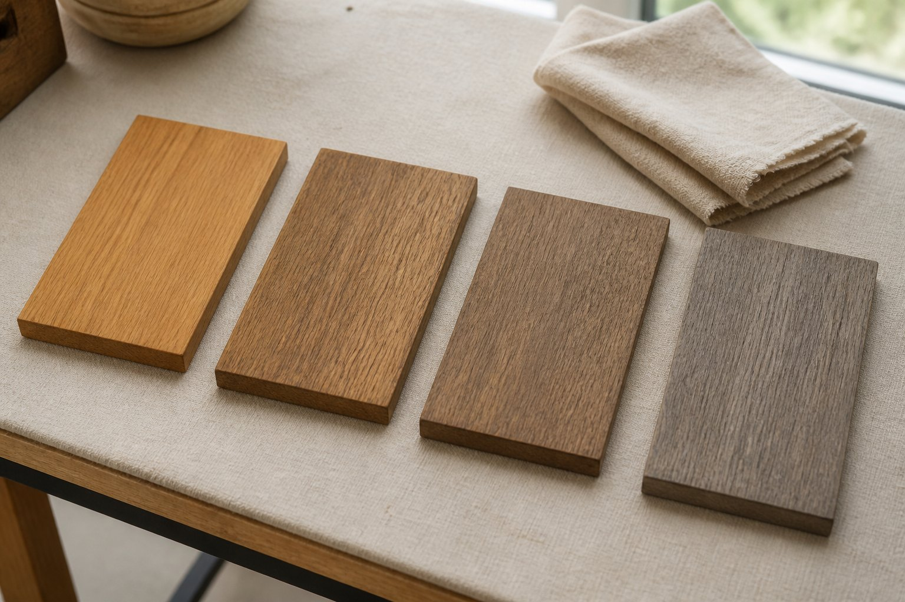

Material Craft
柚木表面颜色变化是否正常
颜色变化要和使用环境、表面处理、清洁方式放在一起看。

颜色变化放回保养主题里看
柚木表面颜色变化通常和氧化、日晒、清洁、油养和使用频率有关。单独看颜色容易误判：有些变化是自然老化，有些变化则可能来自长期积水、清洁剂不合适或局部遮蔽不均。
这个问题更适合放在《柚木日常怎么保养？》中一起理解。主文档会同时讲日常清洁、颜色变化、户外维护和油养边界，阅读时不用在多个小页面之间来回跳转。
直接看主文档中的对应段落
如果你关心的是“变色是不是质量问题”，可以先看保养主文档里的颜色变化段落。那里会把自然氧化、日晒变灰、局部色差和维护目标放在同一组判断里。
相关大主题
- 拼接、结构和表面处理怎么看：颜色、触感和维护方式都受表面处理影响。
- 柚木含油性与稳定性怎么理解：先理解材料特性，再看颜色和维护变化。
- 使用与保养：回到知识首页查看保养相关内容。
参考资料与说明
本文只保留颜色问题的导向说明，具体判断仍需结合实际产品资料、表面处理方式和商家服务说明。
表面颜色变化并非统一结果；出现异常斑痕、翘曲或涂层问题时，仍需结合材料、施工与维护情况单独检查。